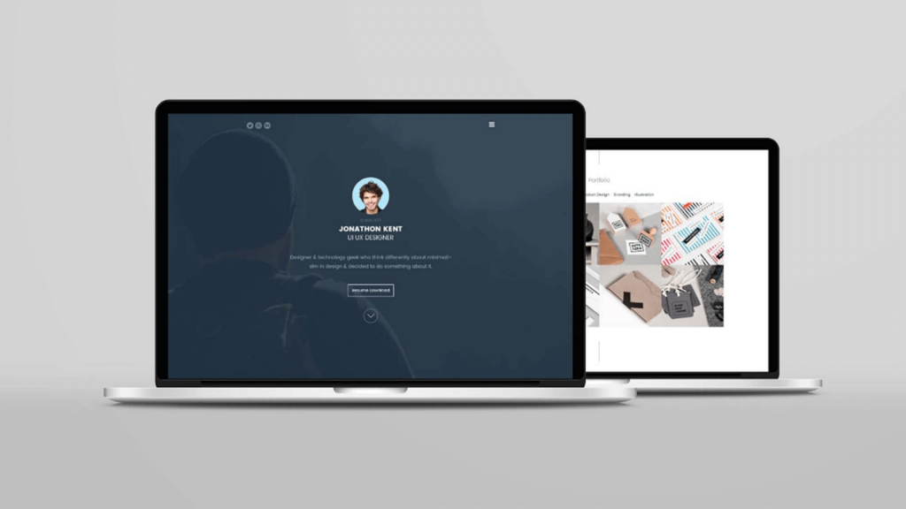

- Home
- >
- Portfolio
- >
- Nome da pagina
Nome do trabalho
O que é rede doméstica?
Redes domésticas não descrevem um tipo de rede de computadores, mas sim sua localização e uso geral. Até o início do século 21, as redes domésticas eram relativamente raras, simplesmente porque não havia muitos lares com mais de um computador e dispositivo periférico.
Qual o nosso objetivo?
O nosso objetivo é a criação de uma empresa fictícia para que possamos prestar serviços com excelência e profissionalismo.
Sobre:
O nosso tema está baseado em como iremos prestar serviços e manutenção em redes domésticas, mostrando passo a passo de como ele será realizado.
Voltar